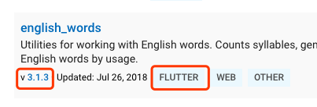
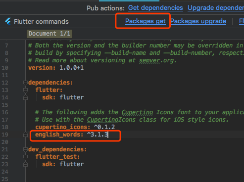

2.3 包管理¶
在软件开发中，很多时候有一些公共的库或SDK可能会被很多项目用到，因此，将这些代码单独抽到一个独立模块，然后哪个项目需要使用时再直接集成这个模块，便可大大提高开发效率。很多编程语言或开发工具都支持这种“模块共享”机制，如Java语言中这种独立模块会被打成一个jar包，Android中的aar包，Web开发中的npm包等。为了方便表述，我们将这种可共享的独立模块统一称为“包”（ Package）。
一个APP在实际开发中往往会依赖很多包，而这些包通常都有交叉依赖关系、版本依赖等，如果由开发者手动来管理应用中的依赖包将会非常麻烦。因此，各种开发生态或编程语言官方通常都会提供一些包管理工具，比如在Android提供了Gradle来管理依赖，iOS用Cocoapods或Carthage来管理依赖，Node中通过npm等。而在Flutter开发中也有自己的包管理工具。本节我们主要介绍一下flutter如何使用配置文件pubspec.yaml（位于项目根目录）来管理第三方依赖包。
YAML是一种直观、可读性高并且容易被人类阅读的文件格式，它和xml或Json相比，它语法简单并非常容易解析，所以YAML常用于配置文件，Flutter也是用yaml文件作为其配置文件。Flutter项目默认的配置文件是pubspec.yaml，我们看一个简单的示例：
name: flutter_in_action
description: First Flutter application.
version: 1.0.0+1
dependencies:
flutter:
sdk: flutter
cupertino_icons: ^0.1.2
dev_dependencies:
flutter_test:
sdk: flutter
flutter:
uses-material-design: true
下面，我们逐一解释一下各个字段的意义：
name：应用或包名称。description: 应用或包的描述、简介。version：应用或包的版本号。dependencies：应用或包依赖的其它包或插件。dev_dependencies：开发环境依赖的工具包（而不是flutter应用本身依赖的包）。flutter：flutter相关的配置选项。
如果我们的Flutter应用本身依赖某个包，我们需要将所依赖的包添加到dependencies 下，接下来我们通过一个例子来演示一下如何添加、下载并使用第三方包。
Pub仓库¶
Pub（https://pub.dev/ ）是Google官方的Dart Packages仓库，类似于node中的npm仓库，android中的jcenter。我们可以在Pub上面查找我们需要的包和插件，也可以向Pub发布我们的包和插件。我们将在后面的章节中介绍如何向Pub发布我们的包和插件。
示例¶
接下来，我们实现一个显示随机字符串的widget。有一个名为“english_words”的开源软件包，其中包含数千个常用的英文单词以及一些实用功能。我们首先在pub上找到english_words这个包（如图2-5所示），确定其最新的版本号和是否支持Flutter。

我们看到“english_words”包最新的版本是3.1.3，并且支持flutter，接下来：
将“english_words”（3.1.3版本）添加到依赖项列表，如下：
dependencies: flutter: sdk: flutter cupertino_icons: ^0.1.0 # 新添加的依赖 english_words: ^3.1.3
下载包。在Android Studio的编辑器视图中查看pubspec.yaml时（图2-6），单击右上角的 Packages get 。

这会将依赖包安装到您的项目。我们可以在控制台中看到以下内容：
flutter packages get Running "flutter packages get" in flutter_in_action... Process finished with exit code 0
我们也可以在控制台，定位到当前工程目录，然后手动运行
flutter packages get命令来下载依赖包。另外，需要注意dependencies和dev_dependencies的区别，前者的依赖包将作为APP的源码的一部分参与编译，生成最终的安装包。而后者的依赖包只是作为开发阶段的一些工具包，主要是用于帮助我们提高开发、测试效率，比如flutter的自动化测试包等。引入
english_words包。import 'package:english_words/english_words.dart';
在输入时，Android Studio会自动提供有关库导入的建议选项。导入后该行代码将会显示为灰色，表示导入的库尚未使用。
使用
english_words包来生成随机字符串。class RandomWordsWidget extends StatelessWidget { @override Widget build(BuildContext context) { // 生成随机字符串 final wordPair = new WordPair.random(); return Padding( padding: const EdgeInsets.all(8.0), child: new Text(wordPair.toString()), ); } }
我们将
RandomWordsWidget添加到_MyHomePageState.build的Column的子widget中。Column( mainAxisAlignment: MainAxisAlignment.center, children: <Widget>[ ... //省略无关代码 RandomWordsWidget(), ], )
如果应用程序正在运行，请使用热重载按钮（⚡️图标） 更新正在运行的应用程序。每次单击热重载或保存项目时，都会在正在运行的应用程序中随机选择不同的单词对。 这是因为单词对是在
build方法内部生成的。每次热更新时，build方法都会被执行，运行效果如图2-7所示。
其它依赖方式¶
上文所述的依赖方式是依赖Pub仓库的。但我们还可以依赖本地包和git仓库。
依赖本地包
如果我们正在本地开发一个包，包名为pkg1，我们可以通过下面方式依赖：
dependencies: pkg1: path: ../../code/pkg1路径可以是相对的，也可以是绝对的。
依赖Git：你也可以依赖存储在Git仓库中的包。如果软件包位于仓库的根目录中，请使用以下语法
dependencies: pkg1: git: url: git://github.com/xxx/pkg1.git
上面假定包位于Git存储库的根目录中。如果不是这种情况，可以使用path参数指定相对位置，例如：
dependencies: package1: git: url: git://github.com/flutter/packages.git path: packages/package1
上面介绍的这些依赖方式是Flutter开发中常用的，但还有一些其它依赖方式，完整的内容读者可以自行查看：https://www.dartlang.org/tools/pub/dependencies 。
总结¶
本节介绍了Flutter中包管理、引用、下载的整体流程，我们将在后面的章节中介绍如何开发并发布我们自己的包。